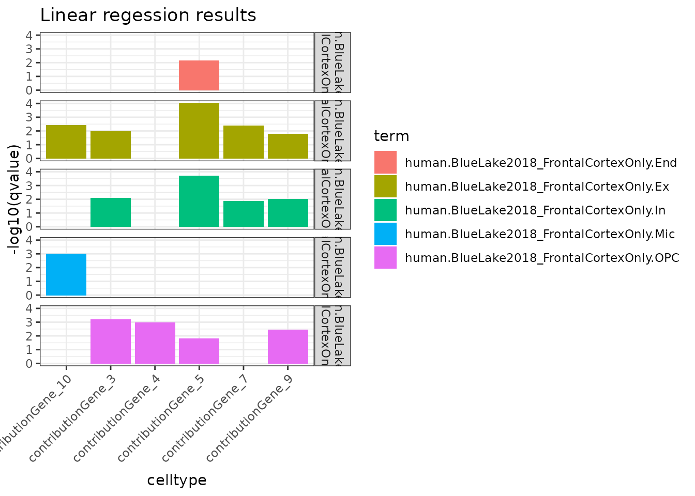

vignettes/celltype_enrichment.Rmd
celltype_enrichment.Rmd
res_lm <- iterate_lm(xmat = xmat,
ymat = ymat) ## + 10 core(s) assigned as workers (2 reserved).## 11410 intersecting genes between xmat and ymat## Running 80 tests: 10 traits x 8 celltypes.##
## 15 significant results @ BH<0.05
## Only plot the top 20 significant results
data_lm <- subset(res_lm, qvalue<.05) %>%
dplyr::slice_min(qvalue, n = 20) %>%
dplyr::arrange(term, qvalue)
ggplot(data_lm, aes(x=trait, y=-log10(qvalue), fill=term)) +
geom_bar(stat = "identity") +
facet_grid(facets = gsub("_","\n",term) ~.) +
labs(x="celltype", title="Linear regession results") +
theme_bw() +
theme(axis.text.x = element_text(angle = 45, hjust=1)) 
res_gsea <- iterate_gsea(xmat = xmat,
ymat = ymat) ## 11410 intersecting genes between GWAS and CTD matrices.## Running 80 tests: 10 traits x 8 celltypes.##
## 0 significant results @ BH<0.05
## Only plot the top 20 significant results
data_gsea <- subset(res_gsea, qvalue<.05) %>%
dplyr::slice_min(qvalue, n = 20) %>%
dplyr::arrange(term, qvalue)
ggplot(data_gsea, aes(x=trait, y=-log10(qvalue), fill=term)) +
geom_bar(stat = "identity") +
facet_grid(facets = gsub("_","\n",term) ~.) +
labs(x="celltype", title="GSEA results") +
theme_bw() +
theme(axis.text.x = element_text(angle = 45, hjust=1))
utils::sessionInfo()## R version 4.1.0 (2021-05-18)
## Platform: x86_64-pc-linux-gnu (64-bit)
## Running under: Ubuntu 20.04.2 LTS
##
## Matrix products: default
## BLAS/LAPACK: /usr/lib/x86_64-linux-gnu/openblas-pthread/libopenblasp-r0.3.8.so
##
## locale:
## [1] LC_CTYPE=en_US.UTF-8 LC_NUMERIC=C
## [3] LC_TIME=en_US.UTF-8 LC_COLLATE=en_US.UTF-8
## [5] LC_MONETARY=en_US.UTF-8 LC_MESSAGES=C
## [7] LC_PAPER=en_US.UTF-8 LC_NAME=C
## [9] LC_ADDRESS=C LC_TELEPHONE=C
## [11] LC_MEASUREMENT=en_US.UTF-8 LC_IDENTIFICATION=C
##
## attached base packages:
## [1] stats graphics grDevices utils datasets methods base
##
## other attached packages:
## [1] ggplot2_3.3.5 dplyr_1.0.7 phenomix_0.1.0
##
## loaded via a namespace (and not attached):
## [1] colorspace_2.0-2 ellipsis_0.3.2
## [3] rprojroot_2.0.2 XVector_0.32.0
## [5] GenomicRanges_1.44.0 ggdendro_0.1.22
## [7] fs_1.5.0 farver_2.1.0
## [9] listenv_0.8.0 DT_0.18
## [11] bit64_4.0.5 interactiveDisplayBase_1.30.0
## [13] AnnotationDbi_1.54.1 fansi_0.5.0
## [15] xml2_1.3.2 codetools_0.2-18
## [17] cachem_1.0.5 knitr_1.33
## [19] jsonlite_1.7.2 RNOmni_1.0.0
## [21] dbplyr_2.1.1 png_0.1-7
## [23] shiny_1.6.0 EWCE_1.0.1
## [25] BiocManager_1.30.16 compiler_4.1.0
## [27] httr_1.4.2 assertthat_0.2.1
## [29] Matrix_1.3-4 fastmap_1.1.0
## [31] limma_3.48.1 later_1.2.0
## [33] htmltools_0.5.1.1 prettyunits_1.1.1
## [35] tools_4.1.0 gtable_0.3.0
## [37] glue_1.4.2 GenomeInfoDbData_1.2.6
## [39] reshape2_1.4.4 rappdirs_0.3.3
## [41] Rcpp_1.0.7 Biobase_2.52.0
## [43] jquerylib_0.1.4 pkgdown_1.6.1
## [45] vctrs_0.3.8 Biostrings_2.60.1
## [47] ExperimentHub_2.0.0 crosstalk_1.1.1
## [49] xfun_0.24 stringr_1.4.0
## [51] globals_0.14.0 mime_0.11
## [53] lifecycle_1.0.0 gtools_3.9.2
## [55] XML_3.99-0.6 future_1.21.0
## [57] AnnotationHub_3.0.1 zlibbioc_1.38.0
## [59] MASS_7.3-54 scales_1.1.1
## [61] ragg_1.1.3 hms_1.1.0
## [63] promises_1.2.0.1 MatrixGenerics_1.4.0
## [65] parallel_4.1.0 SummarizedExperiment_1.22.0
## [67] RColorBrewer_1.1-2 yaml_2.2.1
## [69] curl_4.3.2 memoise_2.0.0
## [71] gridExtra_2.3 sass_0.4.0
## [73] biomaRt_2.48.2 stringi_1.7.3
## [75] RSQLite_2.2.7 highr_0.9
## [77] BiocVersion_3.13.1 S4Vectors_0.30.0
## [79] desc_1.3.0 GeneOverlap_1.28.0
## [81] caTools_1.18.2 BiocGenerics_0.38.0
## [83] filelock_1.0.2 BiocParallel_1.26.1
## [85] GenomeInfoDb_1.28.1 rlang_0.4.11
## [87] pkgconfig_2.0.3 systemfonts_1.0.2
## [89] bitops_1.0-7 matrixStats_0.59.0
## [91] evaluate_0.14 lattice_0.20-44
## [93] purrr_0.3.4 labeling_0.4.2
## [95] htmlwidgets_1.5.3 bit_4.0.4
## [97] tidyselect_1.1.1 parallelly_1.27.0
## [99] plyr_1.8.6 magrittr_2.0.1
## [101] R6_2.5.0 gplots_3.1.1
## [103] IRanges_2.26.0 generics_0.1.0
## [105] ewceData_1.0.0 DelayedArray_0.18.0
## [107] DBI_1.1.1 pillar_1.6.1
## [109] withr_2.4.2 KEGGREST_1.32.0
## [111] RCurl_1.98-1.3 tibble_3.1.2
## [113] crayon_1.4.1 KernSmooth_2.23-20
## [115] utf8_1.2.1 BiocFileCache_2.0.0
## [117] rmarkdown_2.9 progress_1.2.2
## [119] grid_4.1.0 data.table_1.14.0
## [121] blob_1.2.1 digest_0.6.27
## [123] xtable_1.8-4 HGNChelper_0.8.1
## [125] httpuv_1.6.1 textshaping_0.3.5
## [127] stats4_4.1.0 munsell_0.5.0
## [129] bslib_0.2.5.1